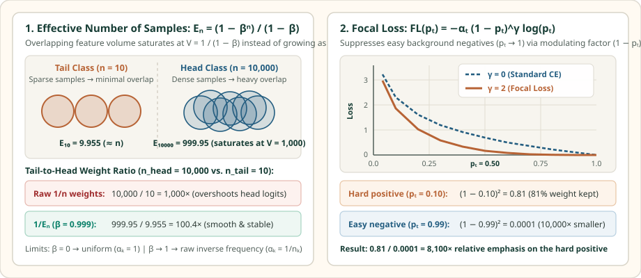

Cost-Sensitive Cross-Entropy, Effective Number of Samples, and Focal Loss
Derive Cui et al.’s Effective Number of Samples $E_n=(1-\beta^n)/(1-\beta)$ from overlapping feature volume, and derive Focal Loss $-\alpha_t(1-p_t)^\gamma\log p_t$ and its exact logit gradient.
Instead of changing the data loader, loss-reweighting methods keep standard sampling and multiply each example’s loss by a weight. That weight can depend on class rarity (Cost-Sensitive Cross-Entropy and Effective Number of Samples) or on prediction hardness (Focal Loss).
1. Cost-sensitive cross-entropy and why raw $1/n_k$ weights overshoot
Class-weighted cross-entropy assigns a positive scalar weight $\alpha_y>0$ to the true class $y\in\{1,\dots,K\}$:
Notice that multiplying a sample’s loss by $\alpha_y$ multiplies all $K$ coordinates of its logit gradient by $\alpha_y$: a tail example not only pulls its own logit $z_y$ up $\alpha_y$ times harder, it also pushes every competing head logit $z_k$ ($k\ne y$) down $\alpha_y$ times harder. When $\alpha_y=1/n_y$ on a dataset with $n_{\text{head}}=10{,}000$ and $n_{\text{tail}}=10$, a single misclassified tail example receives a $1000\times$ larger gradient step than a head example, causing wild logit oscillations and false positives.
2. Cui et al.’s Effective Number of Samples: $E_n=\frac{1-\beta^n}{1-\beta}$
Why is $10{,}000$ head examples not $1000\times$ more informative than $10$ tail examples? Because nearby training examples overlap! Cui et al. (CVPR 2019) model the feature space of a class as a total volume $V\ge 1$, where each training sample covers a unit volume of $1$ and overlaps a previously covered region with probability $p=E_{n-1}/V$:
Define $\beta=1-\frac{1}{V}\in[0,1)$ (so $V=\frac{1}{1-\beta}$). Unrolling the recurrence from $E_1=1$ yields a geometric series—the Effective Number of Samples $E_n$:
Check the two endpoints and a concrete numerical comparison at $\beta=0.999$ ($V=1000$) for $n_{\text{head}}=10{,}000$ vs. $n_{\text{tail}}=10$:

3. Focal Loss: down-weight easy examples via $(1-p_t)^\gamma$
Class weights treat every majority example equally—even when $99\%$ of majority examples are already classified with $p_t=0.99$ and still add up to dominate the gradient. Lin et al. (ICCV 2017) define $p_t$ as the model’s predicted probability for the ground-truth class ($p_t=p$ if $y=1$, and $p_t=1-p$ if $y=0$) and multiply cross-entropy by the modulating factor $(1-p_t)^\gamma$ with focusing parameter $\gamma\ge 0$:
To derive the exact gradient with respect to the logit $z$, let $y\in\{\pm 1\}$ so $p_t=\sigma(yz)$ and $\frac{\partial p_t}{\partial z}=y\,p_t(1-p_t)$. Applying the product rule to $-(1-p_t)^\gamma\log p_t$ gives:
Worked numerical check ($\gamma=2$ vs. $\gamma=0$): Compare an easy background negative ($p_t=0.99$) against a hard minority positive ($p_t=0.10$):
4. PyTorch implementation: Class-Balanced Focal Loss
import torch
import torch.nn as nn
import torch.nn.functional as F
def effective_number_weights(class_counts: torch.Tensor, beta: float = 0.999) -> torch.Tensor:
effective_num = (1.0 - torch.pow(beta, class_counts)) / (1.0 - beta)
weights = 1.0 / effective_num
return weights / weights.mean() # normalize so average class weight is 1.0
class ClassBalancedFocalLoss(nn.Module):
def __init__(self, class_counts: torch.Tensor, beta: float = 0.999, gamma: float = 2.0):
super().__init__()
self.register_buffer("alpha", effective_number_weights(class_counts, beta))
self.gamma = gamma
def forward(self, logits: torch.Tensor, targets: torch.Tensor) -> torch.Tensor:
log_probs = F.log_softmax(logits, dim=-1)
probs = log_probs.exp()
log_pt = log_probs.gather(dim=-1, index=targets.unsqueeze(1)).squeeze(1)
pt = probs.gather(dim=-1, index=targets.unsqueeze(1)).squeeze(1)
alpha_t = self.alpha[targets]
focal_Term = (1.0 - pt).pow(self.gamma)
return -(alpha_t * focal_Term * log_pt).mean()5. Questions worth answering
A mislabeled example has a tiny predicted probability $p_t\ll 1$ for its corrupted label, so $(1-p_t)^\gamma\approx 1$ keeps its weight near maximum while clean examples are down-weighted by $(1-p_t)^\gamma\ll 1$. As a result, Focal Loss concentrates the gradient on corrupted labels.
Since $V=\frac{1}{1-\beta}$ represents the effective feature-space capacity per class, $\beta\in\{0.99, 0.999, 0.9999\}$ corresponds to saturating at $V\in\{100, 1000, 10000\}$ unique prototypes per class.